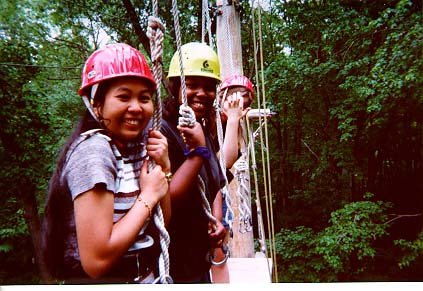
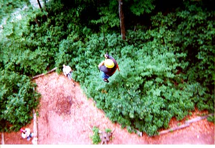

This is a page about the Ropes Course
On July 3,1997 "The Artemis Project" "97" were going to the Ropes Course that was in the YMCA Hockomock in North Attleboro, MASS. It was really fun there.
We met Awesome Dave and Jumping John. They were giving us a tour at the camp. We talked about trust and cheering our teammates. We played the SSS game. It was really fun. Then we did the blind buddies. This games was about trust. One person didn't blind and other person was blind. We were taking turn doing. I wasn't afraid because I did trust my teammates. We all been through a lot of trusting stuff. Then we decided to jump from 45 feet high from the ground. This is why we had to trust our teammates and ourselves.
At frist I felt I can't do it, because I was very afraid of high places. When I started to climb up I felt so nervous and scared. One thing in my mine that tell me was " Savann you can do it." Then I kept climbing up and up. Finally I got up to the top and ready to jump down. I did it, before I never thought to myself that I can do these such thing. Then I realize that because of my teammates support me and because I did trust myself. I (Julie) felt that I was excited to jump off the platform but deep down. I was nervous just thinking of it made be kind of scared. I pratically yelled when I jumped off the platform handing off a rope.
We handed out a questionnare to the "Artemis" girls of "97." It was about how they felt about the Rope Course. These are what people responded.
A lot were nervous and scared about jumping 45 feet in the air. Some of the Artemis girls said they were so excited. It was real cool! Some said they will do it again if they have a chance, but some of them said maybe.
The reason why people might do it again because it was exciting, fun, an adventure and it was a thrill. We thought that Awesome Dave and Jumping John was just a little weird, funny, energetic, outgoing people, and nice leaders.
BY SAVANN VONG AND JULIE YANG

